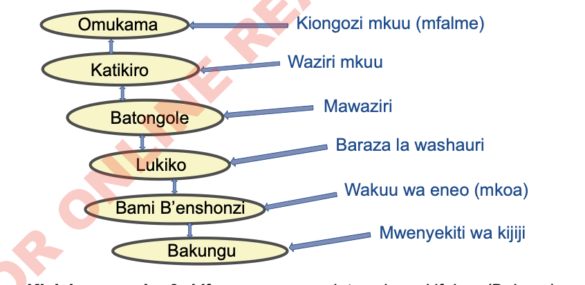

na kulazimika kuleta sehemu ya mazao kwa Abatwazi kama malipo. Shughuli za kilimo ziliimarisha tawala za Kifalme.
Jamii za Buhaya chini ya Omukama Rumanyika, pia, zilikuwa na umaarufu katika kufua chuma. Hii ilisaidia kukua kwa utawala huu kutokana na jamii zingine kuhitaji zana za chuma kwa wingi. Jamii za Buhaya na Karagwe zilibadilisha zana za chuma ili kupata bidhaa zingine. Jamii hizi zilifanya biashara na jamii kama vile Wanyamwezi, Wasukuma na Waha. Pia, zilifanya biashara na jamii za mbali, Mfano, falme za Uganda kama vile, Bunyoro na Ankole na maeneo ya Buganda ili kupata ng’ombe.
Aidha, ukuaji wa tawala za kifalme ulisababishwa na uwapo wa mfumo imara wa uongozi. Kielelezo namba 6, kinawasilisha mfumo wa uongozi wa Kifalme.

Kielelezo namba 6: Mfumo wa uongozi, tawala za kifalme (Buhaya)
Mfano wa mfumo huu wa utawala ulikuwapo katika jamii za Wapare, ambapo kiongozi mkuu alikuwa Mfumwa (chifu) akifuatiwa na baraza la wazee Mnjama, Wakuu wa vijiji Chila au Mchili na chini walikuwapo walinzi na askari.